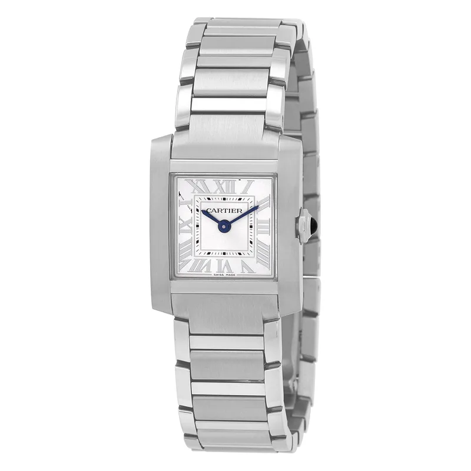

Encyclopedia / Cartier / Tank Française (Small)

No real new deal right now · checked Oct 20, 2026, 1:07 AM ET
$3,600 – $5,300 pre-owned street range
Ref. WSTA0065 · 48 listings sampled (median ~$4,150)
No new deal: WatchMaxx had it new at $4,450, the same as Cartier's own price, and Jomashop's $3,870 listing was out of stock (1:09 AM ET). Range = middle 80% of Chrono24 asking prices on the first results page. Fixed-price listings only.
Price comparison: fixed-price listings
| Store | Condition | Box & papers | Asking price | Link | Checked |
|---|---|---|---|---|---|
| WatchMaxx | new | Yes* | $4,450 | View | Oct 20, 2026 |
Fixed-price (buy-now) asking prices in USD for ref. WSTA0065, cheapest new and cheapest pre-owned with box and papers per store, sorted low to high and checked Oct 20, 2026 (ET). Buy-now listings only. Pre-owned listings are shown only when the listing states box and papers. * New from a grey-market dealer: comes boxed, but the warranty card may be the dealer's rather than the brand's. Chrono24 rows are individual third-party marketplace sellers. Prices change fast; confirm with the store.
What it really costs
| Market | Price | Source |
|---|---|---|
| Cartier US retail | $4,450 | cartier.com |
| New at WatchMaxx | $4,450 (same as retail) | WatchMaxx |
| Pre-owned (Chrono24 asks) | about $3,600 – $5,300 (median ~$4,150, 48 listings sampled) | Chrono24 |
All prices in USD, checked Oct 20, 2026 (ET). Pre-owned ranges are the middle 80% of asking prices on the first Chrono24 results page for that ref (used and some unworn; sample size shown per row), fixed-price listings only. Grey-market = brand-new from a non-authorized dealer.
Buying guide
Key references
| Ref. | What it is | US retail |
|---|---|---|
| WSTA0065 | Tank Française small model, steel, quartz | $4,450 |
Which one I'd pick
Retail vs street: Cartier lists the small steel Tank Française at $4,450; WatchMaxx matched that price new. Pre-owned is where the savings are.
What to check before you buy
- Exact reference: dial colour, size and strap change the price. Match the full ref (WSTA0065) before comparing deals.
- Fakes and red flags: be wary of prices far below the ranges above, stock photos only, or sellers who won't show the caseback, serial and papers.
Alternatives worth a look
- Cartier Tank Must: The cheaper Tank. (33.7 x 25.5 mm steel (large), High-autonomy quartz, retail $4,400 (CRWSTA0106, large, steel bracelet, Cartier US); WSTA0041 no longer listed)
- Cartier Santos-Dumont: Slim Cartier dress watch. (43.5 mm x 31.4 mm Stainless Steel, Quartz (per Jomashop), retail $5,250 (list price per Jomashop))
- Cartier Ballon Bleu de Cartier 40 mm: Round Cartier. (40 mm steel, Calibre 1847 MC)
History
Cartier was founded in Paris in 1847 by Louis-François Cartier.
Cartier says the Tank was designed by Louis Cartier in 1917; the Tank Française is one of its later variations.
Specifications
| Brand | Cartier |
|---|---|
| Model | Tank Française (Small) |
| Key references | WSTA0065 |
| Launch year | Not confirmed |
| Case | 25.7 x 21.2 mm Steel |
| Thickness | 6.79 mm |
| Crystal | Sapphire |
| Dial | Silvered sunray, Roman numerals |
| Hands | Blued-steel sword hands |
| Strap/bracelet | Steel bracelet |
| Movement | Quartz |
| Power reserve | Not confirmed |
| Water resistance | 30 m |
| Approx. US retail (Oct 2026) | $4,450 (Cartier US) |
Specs from the retailer (Jomashop/WatchMaxx) or brand product page linked above for the main reference; see our research notes for which. Retail prices are list prices, not market value, and change often.
Highlights
- 25.7 x 21.2 mm steel case, 6.8 mm thick
- Quartz movement
- Integrated steel bracelet
FAQ
How much is the Cartier Tank Française?
Cartier US retail is $4,450. Pre-owned asking prices on Chrono24 mostly ran $3,600 – $5,300 (median ~$4,150), checked Oct 20, 2026, 1:07 AM ET.
What movement does the Tank Française use?
The WSTA0065 checked here uses: Quartz.
How big is the Tank Française?
25.7 x 21.2 mm Steel.
Is the Tank Française water resistant?
It's rated to 30 m.
Want this watch for less?
Every week I hunt down genuine deals on watches like the Tank Française (Small) and send the best ones. Free, one email a week.
Get the free weekly issuePrices and availability last checked Oct 19, 2026. No affiliate links: I don't earn anything if you buy. Sources are listed in our research notes and linked above.